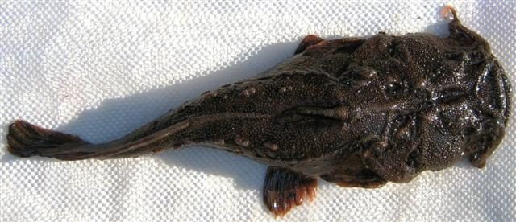

स्क्वायरहेड कैटफिश मछलीSquarehead Catfish
Chaca chaca · Chacidae · FSH-0061

- Scientific name वैज्ञानिक नाम
- Chaca chaca (Hamilton, 1822)
- Family कुल
- Chacidae
- Hindi हिंदी
- स्क्वायरहेड कैटफिश मछली
- Local names स्थानीय नाम
- squarehead catfish, chaca machhli, chega, kurkuri, angler catfish
- Status here यहाँ की स्थिति
- native
- Movement आवागमन
- Resident, here all year
- Known from कहाँ दर्ज
- Others have published records from the wider Awadh–Purvanchal plain, none yet from Basti–Ayodhya अवध–पूर्वांचल से दूसरों के प्रकाशित अभिलेख, बस्ती–अयोध्या से अभी नहीं
- IUCN IUCN
- not evaluated
- Review समीक्षा
- not yet reviewed
When to look कब देखें
Present all year. साल भर मौजूद।
Uses and possibilities उपयोग और संभावनाएँ
Drawn from the documented uses in the profile below, where each is labelled traditional, current or a research lead. All uses →
Tell it apart from इनसे अलग पहचानें
स्क्वायरहेड कैटफिश मछली / Squarehead Catfish
Chaca chaca (Hamilton, 1822) — Chacidae
स्क्वायरहेड कैटफिश मछली — तालों, दलदली पोखरों और नदियों के कीचड़ वाले किनारों पर पाई जाने वाली एक अत्यंत विचित्र, चपटी और मेंढक जैसी दिखने वाली देसी कैटफिश (चेगा/कुरकुरी) है। इसका सिर बहुत बड़ा, चौड़ा और बिल्कुल चौकोर (square) होता है, और इसका मुँह बहुत बड़ा और फैला हुआ होता है। यह अपने आप को कीचड़ और सड़े पत्तों में पूरी तरह दबाकर रखती है और पास से गुजरने वाली छोटी मछलियों को अचानक मुँह खोलकर निगल लेती है।
Quick Identification त्वरित पहचान
| Feature | Description |
|---|---|
| Size | Medium-sized benthic catfish; reaches about 20 cm TL (Froese & Pauly 2025) |
| Head Shape | Enormous, strongly depressed, almost rectangular or square when viewed from above (Hamilton 1822) |
| Mouth & Gape | Immensely wide, terminal, gaping from cheek to cheek with lower jaw projecting (Talwar & Jhingran 1991) |
| Skin Texture | Completely scaleless, covered with fleshy warts, papillae, and dermal fringes (Hamilton 1822) |
| Eyes | Extremely minute, positioned far forward on the top of the flat head (Talwar & Jhingran 1991) |
| Barbels | Three to four pairs of minute, fleshy barbels; maxillary barbels used as an angler lure (Jayaram 2006) |
| Colour | Mottled dark chocolate-brown to blackish with irregular muddy blotches (Talwar & Jhingran 1991) |
Field tip: Look buried under soft silt and rotting leaf litter in sluggish oxbow shallows. A flat, toad-like, dark mottled catfish with a massive square head, tiny eyes, and a vast cavernous mouth gaping from cheek to cheek, is Chaca chaca.
हिंदी: यह मेंढक जैसी चपटी और काले-भूरे रंग की बहुत विचित्र कैटफिश है। इसका सिर चौकोर और मुँह बहुत बड़ा होता है। यह कीचड़ में दबकर शिकार करती है।
Morphology आकारिकी
Size as given by FishBase (Froese & Pauly 2025):
| Measurement | Range | Source |
|---|---|---|
| Maximum length | 20 cm TL | Froese & Pauly (2025), FishBase |
Adult description:
Chaca chaca exhibits a bizarre and highly specialized body form (Hamilton 1822). The anterior half of the body is immensely broad and flattened dorsoventrally, while the posterior body is strongly compressed laterally (Talwar & Jhingran 1991). The head is massive, broad, and flattened, occupying nearly one-third of the overall length and presenting an almost perfect square or rectangular shape when viewed from above (Hamilton 1822). The snout is broadly rounded; eyes are minute, circular, and situated far forward on the dorsal surface (Talwar & Jhingran 1991). The mouth is immense, terminal, and gapes across the entire width of the head, with the lower jaw projecting prominently beyond the upper jaw (Hamilton 1822). The jaws and palate are armed with wide bands of fine, sharp villiform teeth (Jayaram 2006).
Three to four pairs of tiny, inconspicuous barbels are present: minute nasal barbels; small maxillary barbels situated at the corners of the mouth; and two pairs of short mandibular barbels (Talwar & Jhingran 1991). The edges of the mouth and the margins of the head are adorned with ragged, fleshy dermal flaps and papillae that break up the outline of the fish (Jayaram 2006).
The dorsal fin is short, containing a short, stout spine and 3–4 branched rays (Talwar & Jhingran 1991). The pectoral fins have a short, heavy spine with serrated margins. The pelvic fins are large and positioned ventrally. The anal fin is short, carrying 8 to 10 rays (Talwar & Jhingran 1991). The caudal fin is rounded and confluent with a secondary adipose-like caudal fin fold (Hamilton 1822). The skin is completely naked, thick, and studded with small granular tubercles.
Living specimens are dark mottled chocolate-brown, olive-black, or charcoal, with yellowish-brown and reddish blotches resembling wet decaying silt (Talwar & Jhingran 1991). The belly is dirty yellowish-grey spotted with brown.
हिंदी: इसका शरीर लगभग 20 सेमी तक लंबा, मेंढक जैसा चपटा और कीचड़ के रंग का होता है। सिर चौड़ा और चौकोर होता है। शरीर पर कोई छिलका नहीं होता बल्कि त्वचा पर बारीक मूंसे और झालरदार चमड़ी होती है।
Behaviour & Ecology व्यवहार और पारिस्थितिकी
The Squarehead Catfish is a sluggish, sedentary, and specialized benthic ambush predator (Talwar & Jhingran 1991). It inhabits standing or slow-moving waters of oxbow lakes, weed-choked canals, perennial ponds, and sluggish river backwaters with deep mud substrates and decaying leaf litter.
By undulating its flattened body, Chaca chaca excavates a shallow depression in soft silt, burying itself so that only its tiny eyes and mouth rim remain exposed (Jayaram 2006). Its mottled dark skin and ragged dermal fringes provide flawless camouflage against decomposing organic matter (Talwar & Jhingran 1991). In a remarkable display of aggressive mimicry, it twitches its small maxillary barbels over the edge of its mouth, mimicking a small wriggling worm (Jayaram 2006). When an unsuspecting minnow or shrimp approaches to investigate the lure, Chaca chaca drops its lower jaw with explosive speed, creating a massive suction vortex that engulfs the prey whole within milliseconds. When disturbed or handled, it emits a croaking sound by vibrating its pectoral spines, giving rise to its local names "chega" and "kurkuri" (Talwar & Jhingran 1991).
हिंदी: यह मछली पानी की तली में कीचड़ और सड़े पत्तों के अंदर पूरी तरह दबकर बैठी रहती है। यह अपनी छोटी मूंछों को केंचुए की तरह हिलाती है, जिससे आकर्षित होकर जब कोई छोटी मछली पास आती है, तो यह उसे तुरंत निगल लेती है।
Life Cycle / Phenology जीवन चक्र
Seasonal phenology in northern Indian alluvial waters across the agricultural year (Talwar & Jhingran 1991; Jayaram 2006):
| Season / Month | Stage | Field Observation |
|---|---|---|
| June–July (Monsoon onset) | Breeding preparation | Adults become active in flooded weed beds and shallow margins (Talwar & Jhingran 1991) |
| July–August (Kharif peak) | Spawning & egg care | Spawning occurs in sheltered mud nests under submerged roots (Jayaram 2006) |
| September–November (Post-monsoon) | Juvenile development | Camouflaged juveniles feed on small benthic worms and shrimp larvae (Talwar & Jhingran 1991) |
| December–February (Rabi winter) | Sub-adult dormancy | Adults remain buried in deep mud of perennial oxbow pools |
| March–May (Summer / Zaid) | Ambush feeding | Solitary ambush foraging on minnows as water levels drop (Jayaram 2006) |
Breeding takes place during the southwest monsoon from June to August (Talwar & Jhingran 1991). Pairs construct a hollow or cavity in soft mud beneath submerged tree logs or dense weed roots. Females deposit clusters of adhesive eggs on the roof or walls of the nesting hollow. Adults exhibit parental care, guarding the eggs and fanning them with their pectoral fins until hatching (Jayaram 2006). The larvae hatch after a few days, retaining a yolk sac before adopting a benthic, camouflaged predatory existence (Talwar & Jhingran 1991).
हिंदी: मानसून में पानी भरने पर यह कीचड़ और जड़ों के नीचे गड्ढा बनाकर अंडे देती है। माता-पिता अंडों की रखवाली करते हैं। कुछ दिनों में अंडों से बच्चे निकलकर तलहटी के कीचड़ में छिप जाते हैं।
Diet and Feeding Behaviour आहार
Chaca chaca is an obligate carnivorous ambush predator (Talwar & Jhingran 1991):
Natural diet components:
- Small indigenous carplets and minnows, including Puntius sophore (Pool Barb), Salmostoma bacaila (Large Razorbelly Minnow), and Rasbora daniconius (Slender Rasbora).
- Freshwater prawns and shrimps (Macrobrachium spp.) lured by barbel twitching (Jayaram 2006).
- Aquatic insects, including large water bugs, dragonfly naiads, and diving beetles (Talwar & Jhingran 1991).
- Small frogs and tadpoles wandering over bottom silt.
हिंदी: यह पूरी तरह मांसाहारी मछली है जो छोटी मछलियों (जैसे पूल बार्ब और चलवा), पानी के झींगों, जलीय कीड़ों और मेंढक के बच्चों को निगलती है।
Predators / Natural Enemies शत्रु
Documented natural predators in northern Indian alluvial freshwater systems:
- Large riverine predators: Giant catfishes like Wallago attu (Striped Catfish) and murrels Channa marulius (Great Snakehead) occasionally seize exposed chaca.
- Wading birds: Herons and storks spear buried catfishes when water levels drop in drying oxbow pools.
- Otters and water monitors: Dig out buried catfishes along muddy river margins.
हिंदी: कीचड़ में दबे रहने के कारण इसका शिकार कम होता है, लेकिन पानी सूखने पर बगुले, बोआल और उदबिलाव इसे पकड़ लेते हैं।
Agricultural / Human Relevance कृषि प्रासंगिकता
Folk natural history and local consumption: Chaca chaca is well known in rural folklore across northern and eastern India for its bizarre appearance and croaking sound. Although its grotesque, toad-like shape deters some urban consumers, it is caught in cast nets and bamboo traps by rural fishers and consumed locally. The flesh is firm and white, providing essential animal protein, calcium, and trace minerals to riverine families.
Aquarium curiosity trade: Highly sought after globally by specialized oddball aquarium hobbyists as the "Angler Catfish" or "Frogmouth Catfish" due to its incredible ambush behavior and unique camouflage.
Traditional: Known in rural Awadh as "chega" or "kurkuri", consumed as an occasional subsistence catch.
Today: Valued primarily as an extraordinary biodiversity curiosity and specialized ornamental species.
Research direction (a lead, not a result): Investigating the sensory biomechanics of barbel luring behavior and suction feeding dynamics in Chaca chaca.
हिंदी: अपनी अजीब बनावट और मेंढक जैसी शक्ल के कारण यह मछली ग्रामीण क्षेत्रों में 'चेगा' या 'कुरकुरी' कहलाती है। इसे पकड़ने पर यह आवाज निकालती है। ग्रामीण इसे भोजन के रूप में भी खाते हैं।
Expected Locally स्थानीय रूप से अपेक्षित
Not a field record. Written from published accounts for eastern Uttar Pradesh. No confirmed local sighting yet — if you have seen it, that is what the atlas needs.
अभी तक स्थानीय पुष्टि नहीं। यह विवरण प्रकाशित स्रोतों से है, किसी अवलोकन से नहीं।
The Squarehead Catfish is expected across eastern Uttar Pradesh in sluggish river glides, weed-choked oxbow lakes (tals), and perennial marshy pools with deep mud substrates. Look buried in soft mud and leaf litter from August through January. GBIF holds published records from the wider Awadh–Purvanchal plain, none yet from Basti–Ayodhya. A clear photograph showing the massive square head, wide terminal mouth, and tuberculated mottled skin, submitted via the About page, would confirm the first local documentation for the project area.
Distribution वितरण
Global range: Native to the northern Indian subcontinent and Southeast Asia, recorded from India, Nepal, and Bangladesh (Talwar & Jhingran 1991).
In India: Found throughout the Ganges and Brahmaputra river drainages, from the Himalayan foothills across the northern alluvial plains to Assam (Menon 1999).
In Uttar Pradesh: Recorded throughout the Ganges, Ghaghara, Rapti, and Gomti drainage systems in muddy oxbow wetlands.
In Basti district / eastern UP: Expected as a resident native in the Ghaghara and Kuwano river basins, oxbow lakes, and perennial marshlands.
हिंदी: यह भारत, नेपाल और बांग्लादेश की नदियों और तालों में पाई जाती है। उत्तर प्रदेश में घाघरा और कुआनो नदी के दलदली और कीचड़ वाले तालों में यह उपस्थित है।
Research Questions शोध प्रश्न
- What are the specific hydrodynamic velocities generated during the suction strike of Chaca chaca on prey fishes? / शिकार पकड़ते समय यह मछली मुँह खोलकर पानी को कितनी गति से खींचती है?
- How does the accumulation of agricultural pesticide residues in benthic mud impact skin respiration and epidermal tubercles?
- What is the frequency and acoustic mechanism of the sound produced by Chaca chaca when agitated? / खतरे के समय यह मछली किस अंग से आवाज निकालती है?
- How do seasonal dredging and weed removal in oxbow lakes alter daytime ambush microhabitats?
- Can captive breeding protocols be established to study parental care behaviors in artificial wetlands?
Similar Species मिलती-जुलती प्रजातियाँ
| Species | How to tell apart | हिंदी | |
|---|---|---|---|
| Xenentodon cancila ([[freshwater_garfish\ | Freshwater Garfish]]) | Slender needle-like body; jaw prolonged into an elongate beak with sharp teeth | सुइया मछली — शरीर सुई जैसा पतला और जबड़े चोंच जैसे लंबे होते हैं |
| Bagarius bagarius ([[goonch\ | Goonch]]) | Large predatory catfish with massive mouth and sharp teeth, but body streamlined with dorsal saddles | गूंज — सिर चपटा लेकिन शरीर धाराप्रवाह और पीठ पर चौड़े पट्टे होते हैं |
| Channa punctata ([[spotted_snakehead\ | Spotted Snakehead]]) | Cylindrical body covered with scales; mouth moderate; pelvic fins present | गिरई — शरीर बेलनाकार, तराशों से ढका और मुंह मध्यम आकार का होता है |
Field rule: An unmistakable, grotesque, toad-like catfish with a massive square head, minute eyes, and an immense mouth gaping from cheek to cheek, buried in mud, is Chaca chaca.
हिंदी: गूंज का शरीर लंबा होता है और गिरई के शरीर पर तराशे होते हैं, जबकि स्क्वायरहेड कैटफिश (चेगा) का सिर बिल्कुल चौकोर और मुँह मेंढक जैसा बहुत चौड़ा होता है।
Taxonomy & Classification वर्गीकरण
Original description. Described by Francis Hamilton in 1822 as Platystacus chaca in An Account of the Fishes Found in the River Ganges and Its Branches, page 140. Type locality: Rivers and ponds of north-eastern Bengal.
Subspecies. Monotypic — no subspecies are recognized across its range.
Family and order placement. Order Siluriformes, family Chacidae. The family Chacidae comprises a single bizarre genus, Chaca Gray, 1831, endemic to South and Southeast Asia.
Phylogenetic notes. Chaca chaca is the type species of the genus Chaca. It represents one of the most anatomically derived catfish lineages, adapted for extreme benthic crypsis and suction-feeding (Talwar & Jhingran 1991).
IUCN status rationale. Not evaluated (NE) on the global IUCN Red List of Threatened Species. It maintains widespread distributions, though cryptic habits make population assessments challenging.
हिंदी: इसका वैज्ञानिक नाम Chaca chaca है और यह Chacidae परिवार की सदस्य है। प्रकृति में इसका वास तालों के कीचड़ में सुरक्षित है।
Photo Gallery फोटो गैलरी
No photos yet — add field photos to media/species/squarehead_catfish/ and run node scripts/sync_photos.js.
Photos needed आवश्यक फोटो
- [ ] Dorsal view of adult specimen showing massive square head and mottled skin (चौकोर सिर और कीचड़ जैसे रंग की पूरी तस्वीर)
- [ ] Frontal view of open mouth showing the immense gape and minute eyes (खुले हुए बड़े मुँह और छोटी आँखों का दृश्य)
- [ ] Specimen buried in soft mud with only eyes and barbel lure exposed (कीचड़ में दबी हुई मछली की तस्वीर)
- [ ] Lateral view of caudal region showing secondary fin fold (पूँछ के पंख की बनावट का दृश्य)
References संदर्भ
- Hamilton, F. (1822). An Account of the Fishes Found in the River Ganges and Its Branches. Archibald Constable and Company, Edinburgh, p. 140.
- Talwar, P. K. & Jhingran, A. G. (1991). Inland Fishes of India and Adjacent Territories, Vol. 2. Oxford & IBH Publishing Co., New Delhi, pp. 685–686.
- Menon, A. G. K. (1999). Check list - fresh water fishes of India. Records of the Zoological Survey of India, Occasional Paper No. 175, p. 275.
- Jayaram, K. C. (2006). Catfishes of India. Narendera Publishing House, Delhi, pp. 248–250.
- Froese, R. & Pauly, D. (Eds.) (2025). FishBase. World Wide Web electronic publication.
- GBIF Occurrence Data — Chaca chaca, India (2025).
Source file: species/fauna/fish/squarehead_catfish.md